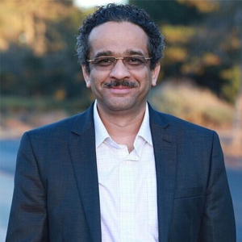

Prof. Yogesh M. Joshi
FNA, FASc, FNASc, FNAE, FSoR (US), FRSC
J. C. Bose Fellow
Mr. and Mrs. Gian Singh Bindra Chair Professor
Senior Editor, Langmuir
Dept. of Chemical Engineering, Indian Institute of Technology Kanpur
Education:
B.E. University of Pune (1996)
Ph.D. IIT-Bombay & National Chemical Laboratory, Pune (2001)
Post-Doctoral Fellowship:
Benjamin Levich Institute for Physico-Chemical Hydrodynamics, New York (2001-2004)

Awards
- J C Bose Fellowship (2023) of Science and Engineering Research Board, Department of Science and Technology, Government of India.
- Academy excellence award of the Defense Research and Development Organization 2019 (Declared in 2021).
- Distinguished Teacher Award of Indian Institute of Technology Kanpur (2018).
- Shanti Swarup Bhatnagar Award in Engineering Sciences (2015).
- RPG Life Sciences M. M. Sharma Gold Medal (IICHE) (2017).
- C. N. R. Rao Faculty award of IIT Kanpur (2015).
- Scopus Young Scientist Award, National Academy of Sciences (NASI), 2012 (2013).
- Outstanding Investigator Award, Department of Atomic Energy - Science Research Council (DAE - SRC) (2012).
- Distinguished Alumnus Award of Maharashtra Institute of Technology Pune (2010).
- Amar Dye Chem Award, Indian Institute of Chemical Engineers (IIChE) (2009).
- Young Engineer Award, Indian National Academy Engineering (INAE) (2008).
- Young Scientist Platinum Jubilee Award, National Academy of Sciences (NASI) (2008).
- Diamond Jubilee Young Achiever Award, Indian Institute of Chemical Engineers (IIChE) (2007).
- Medal for Young Scientist, Indian National Science Academy (INSA) (2006).
- Young Scientist Research Award, Department of Atomic Energy BRNS (2006).
Fellowship/Associateship of the Academies
- Elected Fellow of the Society of Rheology, US (SoR) (2022).
- Elected Fellow of the Indian National Science Academy (INSA) (2023).
- Elected Fellow of the Indian Academy of Sciences (IAS) (2023).
- Elected Fellow of the National Academy of Sciences, India (NASI) (2017).
- Elected Fellow of the Indian National Academy Engineering (INAE) (2016).
- Fellow of the Royal Society of Chemistry (FRSC, Leaders in the field category).
- Young Associate, Indian National Academy Engineering (INAE) (2013-2019).
- Elected life member of National Academy of Sciences (NASI) (2010).
- Associate of Indian Academy of Sciences (2006-2009).
Award Lectures
- RPG Life Sciences M. M. Sharma Speaker at CHEMCON 2017 Haldia, December 2017.
- Dr. R. A. Mashelkar Endowment Lecture, National Chemical Laboratory Pune, April 2015.
Professional Services
- Senior Editor, Langmuir, American Chemical Society (2020-...).
- Member of the Editorial Board, Journal of Rheology, The Society of Rheology, US (2022-...).
- Member of the Editorial Board, Rheologica Acta, The European Society of Rheology (2022-...).
- Member of the Editorial Advisory Board, Thansport Phenomena, De Gruyter Brill (2025-...).
- Member of the Editorial Advisory Board, Open Transport, De Gruyter Brill (2025-...).
- Member of the Editorial Advisory Board, Physics of Fluids, American Institute of Physics (2019-...).
- Member of the Editorial Advisory Board, Langmuir, American Chemical Society (2018-2019).
Chair Professor Positions at IIT Kanpur
- Mr. and Mrs. Gian Singh Bindra Chair Professor (2024-...).
- Pandit Girish & Sushma Rani Pathak Chair Professor (2021-2024).
- C. V. Seshadri Chair Professor Position (2015-2018).
- P. K. Kelkar Faculty Research Fellowship (2013-2016).
- Batch of 1979 Faculty Research Fellowship (2009-2012).
Visiting/Adjunct Professorship
- Adjunct Professor in the department of Chemical Engineering, Department of Polymer & Surface Engineering, Department of Fibres & Textile Processing Technology, and Department of Physics at Institute of Chemical Technology, Mumbai (2020-2024).
- Shri V. V. Mariwala Visiting Professorship in Chemical Engineering of Institute of Chemical Technology, Mumbai (June 2015).
- Institute of Electronic Structure and Lasers (IESL) - FORTH, Crete, Greece (May 2015).
- University of Edinburgh, Edinburgh, UK (May - July 2010).
- University du Maine, Le Mans, France (May - June 2008).
Teaching
Undergraduate Courses
- ESO201 Thermodynamics
- ESO204 Fluid Mechanics and Rate Processes
- ChE221 Chemical Engineering Thermodynamics
- ChE300 Chemical Engineering Communication Skills
- ChE391 Chemical Process Industries
Graduate Courses
- Che 601 Fundamentals of Chemical Engineering
- Che 611 Transport Phenomena
- Che 613 The Structure & Rheology of Complex Fluids
- Che 621 Advanced Thermodynamics and Statistical Mechanics